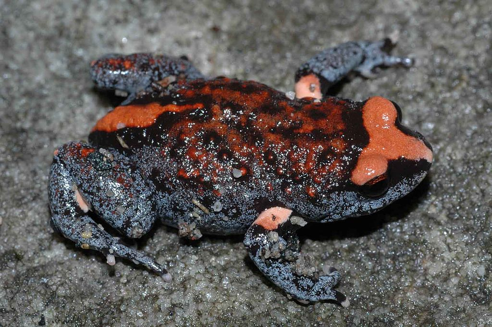

Amphibians > Red-Crowned Toadlet

The Red-crowned Toadlet is easy to identify by the bright orange-red triangle or 'T' shape on its head and a stripe on its lower back of the same colour. On its belly is a striking, marbled, black and white pattern.
Back to Amphibians